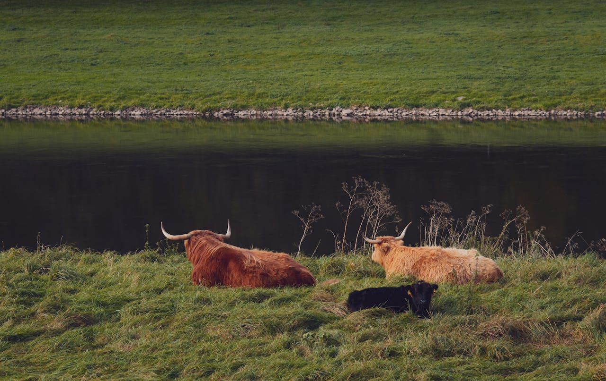

Finding Peace in the Quiet Corners of the World
In an era of over-tourism and viral destinations, true travel magic often lies in places that remain under the radar. Whether it’s a secluded forest trail, a forgotten coastal village, or a tranquil ruin untouched by tour buses, these hidden gems offer solitude, authenticity, and a deeper connection to nature and culture. Here's a guide to some of the most beautiful yet crowd-free destinations for the minimalist traveler.
1. Hallstatt’s Neighbor: Gosau, Austria
While Hallstatt is famous (and overcrowded), nearby Gosau offers breathtaking alpine scenery without the rush. Hike around Lake Gosausee with views of the Dachstein Glacier and enjoy pristine nature in peace.
2. The Azores, Portugal
This volcanic archipelago in the Atlantic is often overlooked for mainland Portugal, yet it offers lush green landscapes, crater lakes, hot springs, and almost no tourist crowds. São Miguel and Flores are ideal for hiking, swimming, and quiet coastal life.
3. Vikos Gorge, Greece
Skip the beaches of Santorini and head north to Zagori, where the Vikos Gorge — one of the deepest in the world — winds through stone villages and ancient bridges. The region is untouched by mass tourism and rich in folklore and natural beauty.
4. Lake Bohinj, Slovenia
While Lake Bled gets most of the attention, Lake Bohinj, nestled in Triglav National Park, offers serenity and spectacular hiking trails with fewer people. Rent a bike, paddle a kayak, or just sit by the lake in near silence.
5. The Albanian Alps
Rugged, remote, and utterly majestic, the Accursed Mountains of northern Albania are a haven for solitude seekers. The Valbona to Theth hiking trail leads through charming mountain villages with guesthouses and home-cooked meals — no tour buses, just raw nature.
6. Jura Mountains, France/Switzerland
These gentle yet wild mountains between France and Switzerland offer hiking, cheese farms, quiet lakes, and rolling pastures. Unlike the Alps, the Jura remain unspoiled and largely ignored by international tourists.
7. Isle of Eigg, Scotland
A small, sustainable island off Scotland’s west coast, Eigg is powered by renewable energy and home to about 100 residents. Explore cliffs, beaches, and local community life in silence and misty beauty.
8. Tottori Sand Dunes, Japan
Japan’s only desert-like landscape is far from the Tokyo crowds. Located on the Sea of Japan coast, Tottori’s vast dunes offer peaceful walking trails, sandboarding, and views that feel otherworldly.
9. Ladakh, India (Off-Peak)
In northern India, Ladakh is a starkly beautiful region of high-altitude monasteries, ancient culture, and Himalayan landscapes. Visiting in shoulder season (April or October) offers solitude and connection with local life.
10. Tierra del Fuego, Argentina
At the edge of South America lies a wild, wind-swept land where mountains meet the sea. Ushuaia is the gateway, but the real beauty lies in trekking the trails and kayaking in isolated bays. It’s the end of the world, in the best sense.
Tips for Enjoying Less-Crowded Places
- Travel off-season when locals reclaim their spaces.
- Stay in smaller towns or villages instead of major cities.
- Use maps and forums to seek out unofficial trails or hidden landmarks.
- Respect local customs — these places are quiet for a reason.
- Be prepared to disconnect: many hidden spots have no Wi-Fi — and that’s part of the charm.
Conclusion: Find Beauty in Silence
The world is full of places that whisper instead of shout — if you're willing to listen. By choosing destinations away from the spotlight, you allow travel to become more intentional, immersive, and restorative. In the stillness, we often find the most vivid memories.
Disclaimer: This photo is shared for informational and educational purposes only. All rights to the original author are reserved.